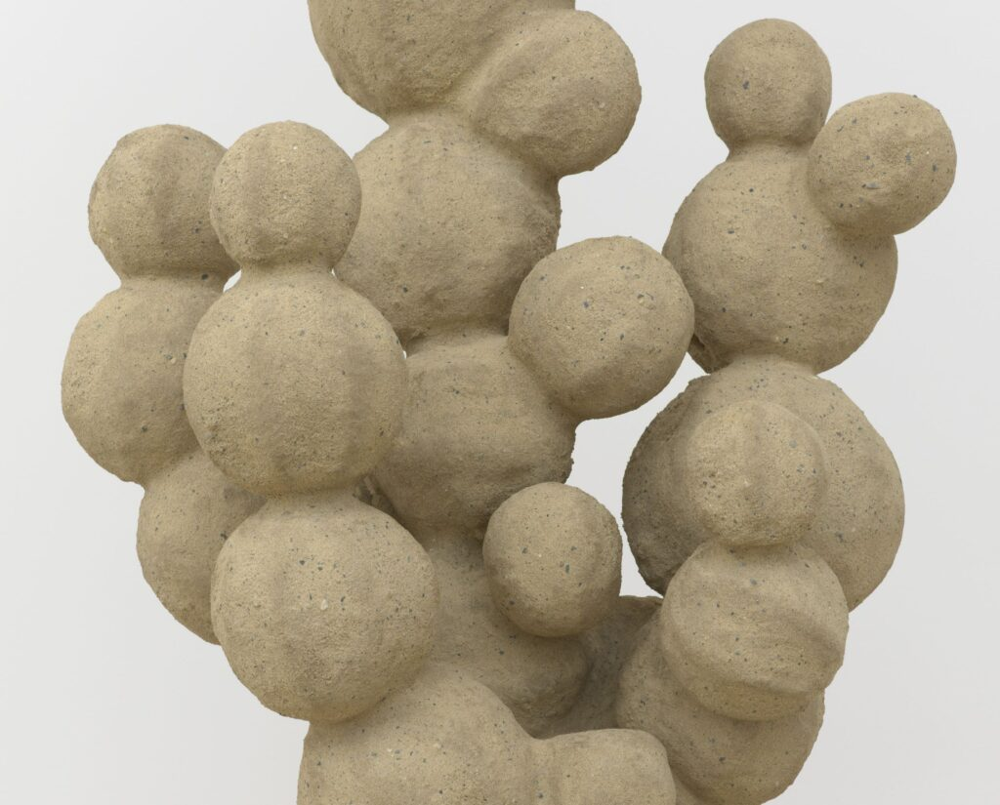

Oren Pinhassi: Into Your Arm’s Length
Artist Oren Pinhassi sculpts anthropomorphic forms at great scale that appeal to the senses and intellect at once. He brings to The Arts Club of Chicago a series of figural/architectural works that occupy the gallery in an encompassing configuration, aiming to trigger the physical engagements of desire and fragility. On a basic level, Pinhassi’s forms address viewers as beings. They stand erect, though full of bulbous protrusions and seductive orifices. Yet, they refuse to be fully explicit, instead, seeking to communicate in the manner of poetry. Pinhassi’s towering or sprawling creatures draw upon such ordinary materials as sand, stone, or vinyl. In a process he has named “erotic construction,” Pinhassi uses sensual appeal, rough texture, suggestive pose, and intimate detail to press against the confines of a restrictive society. He has further explained, “The cavities in my work—windows, holes—simultaneously reference the most intimate cavities of the body and, as recognizable architectural elements, become landscapes for this public exchange.” How do streetscapes or open windows suggest encounters or interpenetrations? What are the boundaries between one and another? Why do we fear contact? And where might mutual understanding be found?
Photo: Truth Teller (detail), 2024. Steel, burlap, sand, polymer and rock. 93 x 30 x 24 in (236.2 x 76.2 x 60.9 cm). Photo by Elisabeth Bernstein. Courtesy of the artist and Lehmann Maupin Gallery.
The exhibition is curated by Janine Mileaf, Executive Director and Chief Curator at The Arts Club of Chicago.
About the Artist
New York-based artist Oren Pinhassi (b. 1985) creates sensuous sculptures and immersive installations that explore the reciprocal relationship between humans and the environments we create. His work investigates how architecture and objects shape our bodies, behaviors, and perceptions while simultaneously carrying traces of human presence, desire, and vulnerability. Pinhassi’s ongoing dialogue highlights how our designs, in turn, design us.
Working primarily with sand and plaster, Pinhassi is drawn to organic materials for their transformative potential and porous nature. His process of layering burlap, plaster, and sand over welded steel skeletons involves repeated tactile engagement, mirroring how environments carry the marks of human action—surfaces bearing traces of interaction, labor, care, and also the effects of erosion and destruction. His works challenge fixed ideas of private and public space and the roles we carry within them, envisioning construction as a tender world of hybrid forms where human and environment exist in constant co-creation.
Selected solo exhibitions include Losing Face, Lehmann Maupin, New York (2004); After Pleasure, Edel Assanti, London (2024); False Alarm, Mostyn, Wales (2023); Should We Stay or Should We Go, RIBOT, Milan (2022); Thirst Trap, Commonwealth and Council, Los Angeles (2021); Lone and Level, Helena Anrather, New York (2021); and The Crowd, Edel Assanti, London (2020). Group exhibitions include This is a Rehearsal, The Chicago Architecture Biennial, Chicago (2023); Moveables, ICA Philadelphia (2023); SSSSSSSSSCULPTURESQUE, Kiang Malingue, Hong Kong (2022); and Guilty Curtain, Kölnischer Kunstverein, Cologne (2021).
Pinhassi holds a B.Ed.F.A. from Beit-Berl College, Hamidrasha School of Art (2011), and an MFA from Yale University (2014).